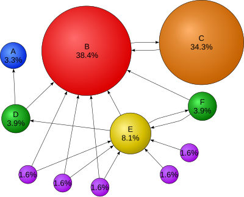
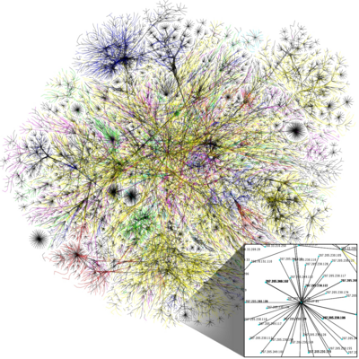

Advanced Web Concepts
In the Code.org video, what does the speaker compare a search engine’s index to?
In the Code.org video, what role does a “spider” play in how search engines discover pages?
In the Google “How Google Search Works” video, what are the three main stages Google uses to deliver search results?
In the Google video, what does Googlebot do when it discovers a new link on a page it is crawling?
In Eli Pariser’s TED talk, what did he notice when two friends searched for the same term on Google?
In Eli Pariser’s talk, what does he call the invisible, personalized world of information that search engines and social media create around each user?
Before a search engine can answer your questions, it has to know what exists on the web. That job belongs to web crawlers — automated programs (sometimes called “spiders” or “bots”) that hop from page to page by following hyperlinks. Google’s crawler is called Googlebot; Microsoft’s is Bingbot.
A crawler starts with a list of known URLs (called “seed URLs”). It downloads each page, reads the HTML, extracts every link it finds, and adds those new URLs to its queue. This cycle repeats billions of times a day.
Once a crawler downloads a page, the search engine processes its content — text, headings, images, meta tags — and stores it in a massive database called the index. Think of the index like a library catalogue: instead of listing books by title, it maps every word to the pages where that word appears. When you type a query, the search engine looks up those words in the index — it does not search the live web in real time.
Not every page gets indexed. A file called robots.txt on a website can tell crawlers which pages to skip. Pages behind login walls, duplicate content, or extremely low-quality pages may also be left out of the index.

Having an index is only half the challenge. When you search for “best pizza recipe,” millions of pages might match. The search engine needs to decide which ones to show first. That decision is called ranking.
In 1998, Larry Page and Sergey Brin invented PageRank, the algorithm that made Google famous. The core idea: if many other pages link to a page, that page is probably important. And a link from an already-important page counts more than a link from an obscure one. Imagine a voting system where every link is a vote, but votes from respected sources carry extra weight.
Modern search engines go far beyond PageRank. Google considers hundreds of ranking factors, including how well the page’s content matches your query (relevance), how fresh the content is, how fast the page loads, whether it works well on mobile, and whether the site is trustworthy. Together, these signals help the engine sort results so the most useful pages appear near the top.
Search engine optimization (SEO) is the practice of making a website more visible in search results. If you build a website and nobody can find it through search, it might as well not exist.
The first step is choosing the right keywords — the words and phrases people actually type when looking for content like yours. Those keywords should appear naturally in your page’s title, headings, and body text.
Next comes on-page structure. Search engines give extra weight to text inside
heading tags
(<h1>, <h2>, etc.), the
<title> element,
and the meta description.
Good alt text on images helps too, because crawlers cannot “see” images the way
humans do.
Finally, backlinks — links from other websites pointing to yours — remain one of the most powerful ranking signals. Earning backlinks by creating genuinely useful content is the foundation of off-page SEO. Tricks like buying links or stuffing invisible keywords into a page are called spamdexing (or “black-hat SEO”), and search engines penalize sites that use them.

Search engines do not show the same results to everyone. Google uses signals like your location, language, search history, and device type to personalize results. This can be helpful — a search for “pizza” shows nearby restaurants instead of ones across the world — but it also creates what activist Eli Pariser calls a filter bubble: an invisible personal universe of information that reinforces what you already believe and hides viewpoints you might disagree with.
A related concept is the echo chamber effect on social media, where algorithms keep showing you content similar to what you have already liked or shared. Over time, your picture of the world can narrow without you noticing.
To counteract filter bubbles, try searching in a
private/incognito window,
using privacy-focused search engines like
DuckDuckGo, or
deliberately seeking out sources that challenge your views. You can also use advanced search
techniques: wrapping a phrase in quotes (“exact phrase”) forces the engine to
find that exact wording; the minus sign (-word) excludes a term; and the
site: operator limits results to a single domain (e.g.,
site:wikipedia.org climate change).
What is the purpose of a web crawler?
What was the key insight behind the original PageRank algorithm?
Which file on a website tells crawlers which pages they should not visit?
What is a filter bubble?
Which advanced search technique limits results to a specific website?
Create an HTML/CSS/JS page that simulates a search engine. You have a hardcoded array of 20 “webpage” objects, and users type queries to find matching results ranked by relevance.
Define an array of 20 objects. Each object has three properties:
title — the page title (e.g., “How to Bake Chocolate Cake”)content — a short description or snippet (1–2 sentences)keywords — an array of relevant keywords (e.g., ["baking", "cake", "chocolate", "recipe"])<input> and clicks a “Search” button (or presses Enter).Paste your HTML into the HTML panel, CSS into the CSS panel, and JS into the JavaScript panel. Click “Run” to see the result!